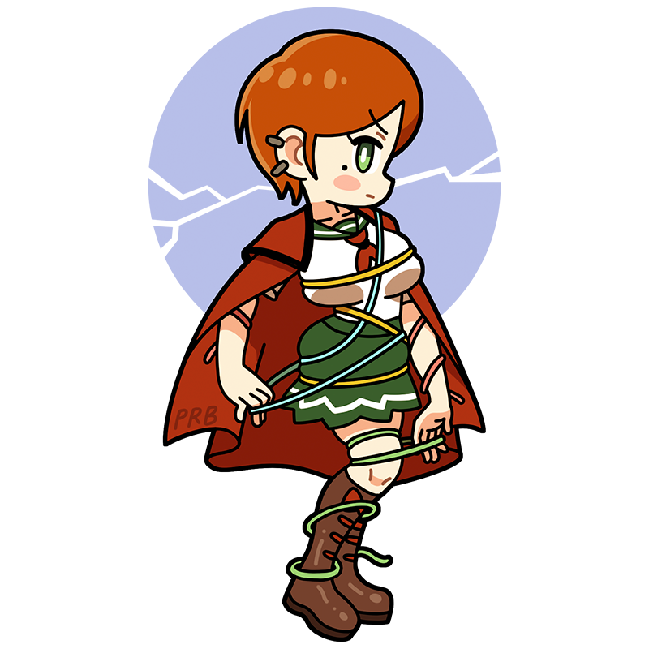

The world keeps changing...
but I still want to remain true to myself.
Hunt
A quiet, steadfast professional
—the unsung hero of the Pre-Raphaelite movement
A close friend of Millais and one of the founding members of the Pre-Raphaelite Brotherhood. Even as the other members gradually changed their artistic styles, she remained devoted to the ideals of the movement until the very end. She doesn’t speak much, but her works are filled with vivid color and rich storytelling.
Style
Pre-Raphaelite BrotherhoodHometown
England
Classics
- "The Lady of Shalott"
- "The Shadow of Death"
- "The Light of the World " etc.
This is the Hunt piece!
The Lady of Shalott
A work inspired by The Lady of Shalott by the English poet Alfred Tennyson. Cursed and confined within a tower, the woman could only view the outside world through a mirror. But one day, she caught sight of the knight Lancelot in the reflection and fell instantly in love. Unable to resist, she looked out the window with her own eyes. At that very moment, the woven tapestry unraveled, the mirror cracked across its surface, and the curse descended upon her.
Year
Around 1888-1905
Medium
Oil on canvas
Dimension
188.3 cm × 146.4 cm
Collection
Wadsworth Atheneum
（USA)
Who is Hunt?
William Holman Hunt
One of the founding members of the Pre-Raphaelite Brotherhood alongside John Everett Millais and Dante Gabriel Rossetti. Even as his fellow members gradually shifted toward new artistic styles, he remained committed to the Pre-Raphaelite ideal of “truthfully depicting nature” until the very end, producing many weighty works based on biblical and historical subjects. Perhaps because many of his paintings are rather serious in tone, he is somewhat less well known in Japan than the others, but his meticulous realism and astonishingly detailed technique are truly breathtaking.
Full Name
William Holman Hunt
Born
April 2, 1827
Died
September 7, 1910(aged 83)